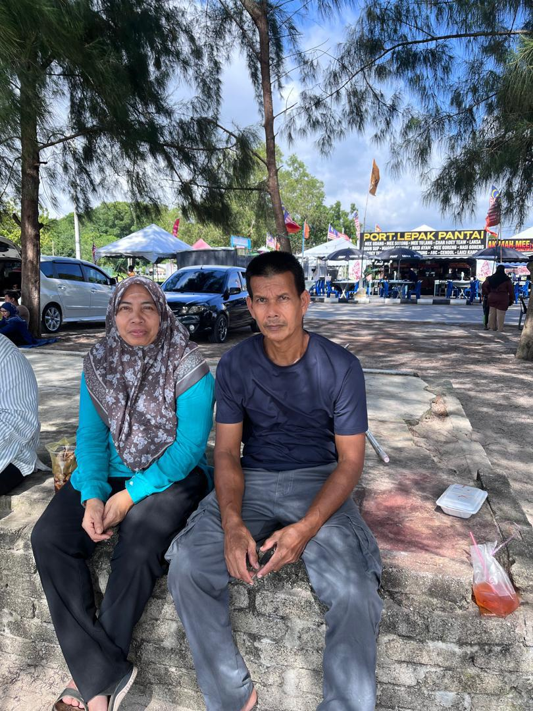

MY FAMILIES
My father's name is Mohamad Kamil bin Hassan, and he was born on August 20, 1971, in Pokok Sena, Kedah. In the year 2003, he tied the knot with my mother, marking the start of a loving family life. My father is a self-employed individual with a strong sense of dedication and responsibility. He is not only an exceptional father who provides unwavering attention and care to his children but also a skilled craftsman, especially in carpentry work. His efforts and love make him the best father one could ever wish for.
My mother's name is Noorliza binti Noor, and she was born on February 3, 1978, in Kuala Nerang, Kedah. She is a dedicated housewife who devotes her time and energy to taking care of our family. To me, she is the best mother in the world. She always encourages her children to strive for success and often advises me to study hard and complete my diploma on time. My parents are truly amazing, and I deeply love them. I aspire to make them proud and never let them down.


The first picture features my eldest brother, Muhammad Haris Ikhwan bin Mohamad Kamil, who was born on June 6, 2006, and is currently 18 years old. He is pursuing his studies in information technology at the Sultan Abdul Halim Polytechnic in Jitra, Kedah. The second picture is of my youngest brother, Muhammad Ikhram bin Mohamad Kamil, who is 13 years old. He was born on July 4, 2011, at Sultanah Bahiyah Hospital in Kedah and is now studying at SMK Naka, Kedah.